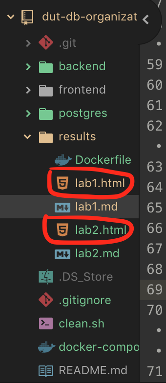

Лабораторная работа 1
Онлайн версия доступна по ссылке
План отчёта
- Обоснование использования выбранных технологий.
- Подготовка инструмента формирования отчётов по лабораторным работам
- Написание отчёта
Обоснование использования выбранных технологий.
При выполнении лабораторных работ были выбраны несколько ключевых критериев использования технологий:
- Распространённость
- Открытость(используется бесплатное ПО и где это возможно с открытым исходным кодом)
- Кросплатформенность(работа выполняется в ОС macOS, а будет проверяться на ОС Windows)
С преподователем были согласовано такие технологии:
- Формат отчётов в виде html5 файлов как наиболее универсальное и распростаннённое решение в наше время.
- База данных - Postgres 11
Об использовании технологий других технологий решения я принимал самостоятельно.
- GIT - наиболее распределённая система управления версиями
- Markdown - наиболее часто используемый формат хранения документации.
По скольку сам стандарт HTML для редактирования вручную не очень практичен, было принято решения писать отчёты в формате Markdown
- marked - с помощью этой утилиты с открытым исходным кодом
автоматически преобразовать в HTML файлы, которые можно будет открыть локально в любом современном браузере, который поддерживает HTML стандарт.
- Docker - как система контейнеризации.
Вам больше не нужно будет устанавливать различное ПО под каждое окружение. У вас больше не будет конфликтов при настройке различного ПО. Вы можете установить хоть сотню БД или любого другого ПО, которое будут работать независимо и одновременно. Достаточно только установить систему контейнеризации.
- Javascript ES7 - мультипарадигменный язык программирования
- Node.js - Очень популярная технология(фреймворк) для написания серверного ПО
- React.js 16 - Очень популярная технология(фреймворк) для создания сайтов в паре с языком JSX
- JSX - это расширение синтаксиса JavaScript, которое позволяет использовать похожий на HTML синтаксис для описания структуры интерфейса.
- Material UI - Самый современный стандарт пользовательского интерфейса созданный в компании Google, который используется в большинстве продуктов всех видов(от ОС Android, web приложениях, десктопное ПО для Windows и даже смарт часах)
Подготовка инструмента формирования отчётов по лабораторным работам
В интернете была найдена утилита marked С помощью которой можно локально преобразовать отчёты по лабораторной работе из формата Markdown в формат HTML5
Для этого подготовим файл docker-compose.yml с описанием контейнера, который будет выполнять преобразования.
А так же описание действий самого контейнера находятся в файле results/Dockerfile
Алгоритм работы:
Контейнер после сборки получит доступ к файлам lab.md в папке results/, запустит утилиту преобразования marked и сохранит результаты в соответствующие файлы lab.html
Чтобы запустить контейнер нужно использовать команду
docker-compose up --build dboak-md-to-html

В результате появятся файлы

Так же вы можете это сделать вручную онлайн по ссылке https://marked.js.org/demo/ или в другом любом удобном конвертере.